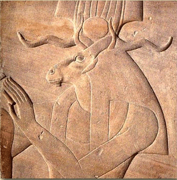
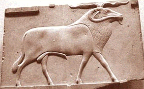

The origins of the "Goat of Mendes" can be traced back to Ancient Egypt. Goats and Rams were worshipped in many cities throughout Egypt thousands of years ago. The Goat is synonymous with Satanism. The horns represent the Horned Gods/Goddesses. Goats also symbolized fertility in many different cultures and times. The Goat as a symbol of fertility and focus of religious rites dates all the way back to Sumeria.
The goat symbolizes fertility- fertility in multiplying the life force, vril, which activates and raises the serpent. The "Goat of a Thousand Young" is referring to the crown chakra, "Sahasrara" in Sanskrit which means "Thousand Petal Lotus."
The Goat of Mendes
Ptah the Egyptian God of Magick, knowledge and wisdom (an alias of Satan) *became* the goat, and sometimes a ram in the city of Mendes where he was worshipped as such. The Goat/Ram of Mendes represented the "Ba" which was the Egyptian word for the "soul." Ptah was considered to be a great magician and "Lord of the Serpents."¹
There are many false claims, based upon ignorance that the Goat was invented as a reaction to the "lamb" of Christianity. The Christian use of the lamb came much later and in truth is based upon the sign of Aries (The spring Easter lamb). Everything in Christianity has been stolen and corrupted from religions preceding it.
The Horned Goat is also directly of Enki (Satan). The constellation of the Horned Goat (Capricorn) is the time of the winter solstice, known as "The Southern Gate of the Sun." ²
“The Goat was known in early Babylonian times as the God ‘Ea’ (Enki/Satan). Ea was known as ‘He of vast intellect and Lord of the Sacred Eye’ protector of his people and the bringer and giver of knowledge and civilization to humanity. Represented as a snake, he ended up in the ‘Garden of Eden as the Snake in the tree of life, encouraging learning and knowledge rather than blissful ignorance.’ Whenever Ea roamed the Earth, he took the form of a goat. Ea was considered the Father of Light" and his celebrations dating back to 15,000 B.C.E., were carried out wearing goat skins.³
Satanism is in truth, the world's oldest religion. Satanism is not an "invention" or "inversion" of Christianity.
Ancient Egyptian images of the Goat of Mendes:
